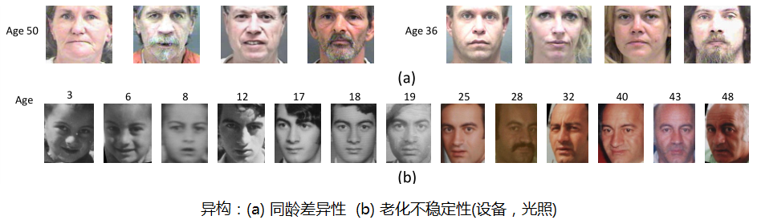
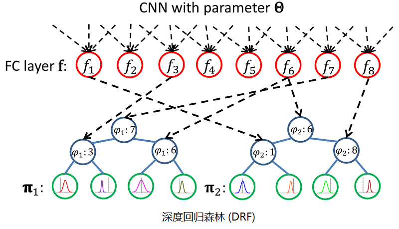
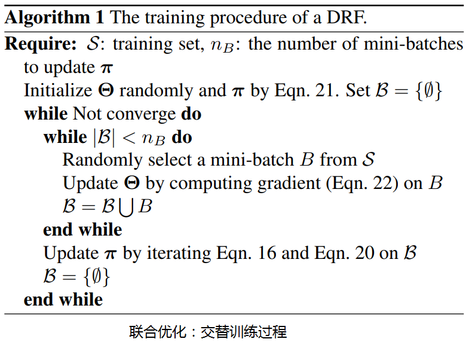
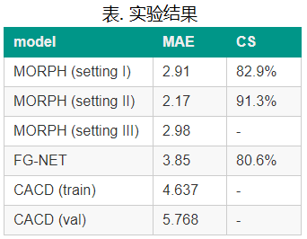

年龄估计¶
Deep Regression Forests¶
论文: “Deep Regression Forests for Age Estimation”, CVPR 2018, paper, code
摘要:
人脸图像的年龄估计是一个典型的非线性回归问题。这个问题的主要挑战在于人脸特征空间和年龄是异构：同龄人之间的巨大面部容貌差异性，以及老化模式的非固定性。本文提出一种用于年龄估计的端到端模型——深度回归森林 (Deep Regression Forests)。DRFs 将分支结点连接到卷积神经网络的全连接层，通过联合学习分支结点中的输入相关的数据划分和叶子结点上数据抽象来处理异构数据。这种联合学习采用交替策略：首先固定叶子节点，通过反向传播优化分支结点和 CNN 参数；然后固定分支结点，通过迭代由变分推断得到的步长自由和快速收敛的更新规则来优化叶子结点。我们在三个标准年龄估计基准上验证了提出了 DRFs，并在所有的基准上都取得了最先进的结果。
相关方法：
人脸年龄估计有两种子任务：精准估计时序生理年龄（如 15 岁），年龄段分类（如 青年，15~20）。本文针对的是精准年龄，问题的关键是学习面部特征和时序年龄间的非线性映射，而挑战在于两者间的异构性。
相关方法及缺陷：
- 整体非线性核映射：因整体的异构性不可避免陷入偏差而过拟合。
- 分治策略：分层回归、树回归；硬划分不能保证局部同构。
- 序列回归（Rank）：二元子分类器，扩展性不够。
- 标签分布学习：建模年龄相关性，性能不错，不适用于复杂数据。
主要贡献：
- 模型结构：提出 DRFs(CNN+RF) 的端到端的联系学习模型，学习输入相关的分支划分和叶子概率分布。
- 学习策略：基于变分推断，提供了 DRFs 中叶节点概率分布在优化过程中数学上的收敛保证。
- 最佳性能：在多个年龄评估基础测试集上都达到了最先进的结果。
深度回归森林：
深度回归森林是一个生成模型，由卷积神经网络和随机森林组成的端到端模型，采用迭代训练来联合学习年龄空间的条件概率分布，以最终的年龄期望作为预测结果。
如图，DRF 由 CNN 和 两颗决策树的随机森林组成。CNN 作为特征提取器将图像转化为高层视觉语意特征（红色），决策树分支结点（蓝色）根据 索引函数 \(\varphi\) 采样视觉特征，采用 sigmoid 函数 \(\sigma\) 进行 软划分，每叶子结点（红色）表示年龄空间的 独立高斯分布 \(\pi_\iota (y)\) 。
注解
索引函数 \(\varphi\) 随机初始化以后就确定了，不需要学习。
决策树差异在于：1. 索引函数 \(\varphi\) 不同，2. 叶节点的初始分布。
DRF 需要学习的参数：1. CNN 的权重 \(\Theta\)，2. 叶节点高斯分布参数（均值方差）。
年龄预测：
- 分支结点软划分：索引 CNN 高层视觉语意特征进行软划分 \(s_n(x;\Theta)=\sigma(f_\varphi(n) (x;\Theta))\)
- 叶节点概率：分支结点处根据软划分概率选择左右结点，满足独立事件乘法准则。
\[P(l|x;\Theta)=\prod_{n\in N}s_n(x;\Theta)^{1(l\in L_{n_l})}(1-s_n(x;\Theta))^{1(l\in L_{n_r})}\]
- 期望年龄分布：每个叶节点年龄分布的加权融合 \(p(y|x,T)=\sum{l\in L}P(l|x;\Theta)\pi_\iota (y)\)
- 预测期望：以融合年龄分布的期望作为最终预测结果 \(\hat{y}=g(x;T)=\int y*p(y|x;T)dy\)
交替训练：
- 损失函数：与常规生成模型一样，DRF 最终目标也是优化在训练集 \(S\) 上的最大似然估计，即最小化负对数似然
\[R(\pi,\Theta;S)=-\frac{1}{N}\sum_{i=1}^{N} log(p(y_i|x_i;T))\]\[(\pi^*,\Theta^*)=\mathop{argmin}_{\pi,\Theta}R(\pi,\Theta;S)\]
- 固定叶子结点参数 \(\pi_\iota (y)\)，分支结点共享参数 \(\Theta\)。因为分支结点使用Sigmoid 软划分，结点连接关系缺点，因此可以使用标准 BP 训练 CNN 权重。
- 固定分支结点参数 \(\Theta\)，优化叶子结点参数模型 \(\pi_\iota (y)\)。在固定分支结点情况下，优化问题简化为期望年龄分布的最大似然的（受限）优化问题，可以采用变分推断（Variational Bounding）来迭代最小化损失。
实验结果：
MAE: 相对于 Ground Truth 的平均偏差。 CS：
参考：
{kind=link}
{kind=link}